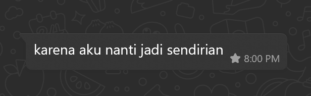

untuk sayangku.
Aku mau..
minta maaf masalah semalem..
- minta maaf kalo aku uda egois
- minta maaf kalo aku ngga bisa nemenin kamu
- minta maaf gabisa ngertiin kamu
- minta maaf kalo aku main sama temenku
- minta maaf kalo masi belum bisa jadi yang terbaik
- minta maaf kalo jarang ada waktu buat kamu
- minta maaf kalo aku ada salah pokonyaaa
sebenernya kamu gapapaa banget kalo mau ngomong kamu ngga nyaman sayang, kita bisa ambil jalan tengahnya, semalem emang aku pengen main sama temenkuu, aku juga jarang main gara gara kerjaan terus, kapan lagii sayang aku bisa main aku harap kamu bisa ngertiin aku yaa maaf sekali lagi kalo buat kamu kecewa.

aku seneng bangett sebenernya kamu bilang kaya gini sayang, aku jadi tau kalo kamu beneran sayang sama aku..
website ini aku buat sebagai ucapan permintaan maaf kuu yang sebesar besarnyaa
aku mau minta kamu buat ngomong sayang jangan dipendem, buat nutupin kekurangan aku yang kurang perhatian ini..
aku tau ego kita sama sama tinggi mungkin karena kita sama sama anak pertama sayang.. jadi gaada yang mau nurunin gengsi
intinyaa aku minta maaf dan terimakasih banget, aku harap kalo misal aku ada salah dan kamu menghilang, kamu ngga aneh aneh ya sayang aku ngga mau habit kamu yang dulunya dendaman ada dihubungan kita, aku mau kita bisa selesaiin masalahnya bareng barengg
Selanjutnya..
ini aku ada hadiah buat kamu, maaf ya kalo aku ngga buat sendiri hehe aku nyomot aja punya orang..